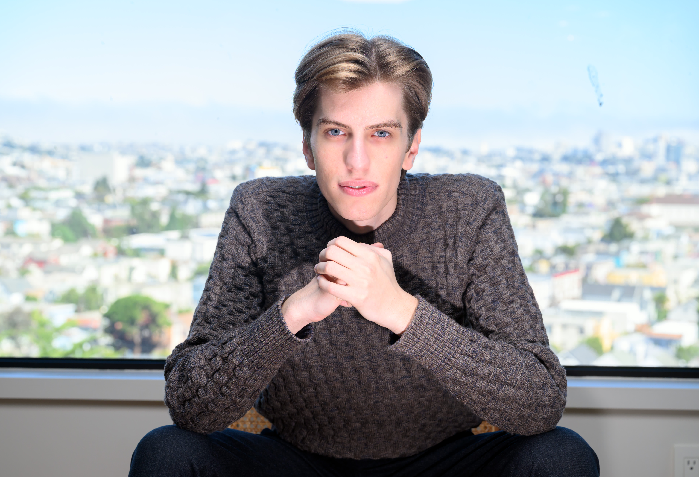

In June 2024, a 22-year-old published a 165-page essay called Situational Awareness and became, more or less overnight, the most quoted man in Silicon Valley. Leopold Aschenbrenner's argument was that artificial general intelligence was arriving faster than anyone was prepared for, and that the compute buildout required to get there would be the defining investment opportunity of the decade.
He was right. That is the part worth sitting with, because everything that follows makes more sense once you accept that his call was correct.

He had form. Columbia at 15, valedictorian at 19, then OpenAI's Superalignment team until he was fired in April 2024 over a disputed leak. He also spent a brief spell at Sam Bankman-Fried's FTX Future Fund, which in hindsight reads like foreshadowing that nobody bothered to underline at the time. Then he turned the essay into a hedge fund and named it after itself, which is either supreme confidence or a marketing decision that aged like milk. Possibly both.
Situational Awareness LP launched in late 2024 with roughly $225 million from Stripe's Collison brothers, Nat Friedman and Daniel Gross. The strategy was clean: go long the physical bottlenecks of AI — the memory and the power and the data centres — and short the software incumbents the market had already priced for an AI windfall. SK Hynix, SanDisk, Nebius, CoreWeave, Bloom Energy on one side. Adobe and friends on the other. All of it financed at roughly four times leverage.
For eighteen months it worked spectacularly. The fund returned 47% after fees in the first half of 2025, then 439% net in the first half of 2026, and grew to as much as $45 billion at its peak. Worth being precise here, because the numbers get garbled in the retelling: that $45bn was not $225m compounding. It was returns, plus a torrent of new capital from investors who wanted in, plus a great deal of borrowed money.
439%
Net return, H1 2026
$45bn
Peak AUM
−67%
Lost in July 2026
Then came July 2026. The Philadelphia Semiconductor Index fell 28.6% from its June peak. SK Hynix's US shares dropped nearly half. And the software shorts — the leg that was supposed to cushion all this — rallied instead. Adobe rose about 27%. Both sides of the book lost money at the same time, which is the specific nightmare that hedging is meant to prevent.
Here is where leverage stops being an abstraction. Borrow four dollars for every one you own and a 25% fall in the portfolio doesn't dent you, it erases you. Margin calls arrived from Goldman Sachs, JPMorgan and Bank of America. The fund lost around 67% in a single month.
What happened next took less than a day. Roughly $16 billion of public equity went to Ken Griffin's Citadel at a discount reported at more than 10%. Millennium and Jane Street looked at the book and passed, which tells you something about how the room read it. Then, on the very next trading day, with the forced seller finally out of the way, SanDisk rose 23.9% and Bloom Energy rose 26.4%.
You are allowed to find that funny. Aschenbrenner probably does not.
Anyone who has studied markets for more than a term will recognise the shape of this. Archegos, 2021. Bill Hwang, roughly five times leverage through total return swaps, concentrated positions, a forced unwind that took days and cost the banks around $10 billion, with Credit Suisse alone eating about $5.5 billion. Same disease, different patient.
The instructive difference is who paid. In 2021 the prime brokers were the ones left holding it. By 2026 they had learned that lesson thoroughly, which meant the margin calls came early and the losses landed on the fund's own investors instead. The banks got their situational awareness. It just wasn't the fund that supplied it.
Situational Awareness LP is not dead. It continues as a private vehicle built around a stake in Anthropic worth roughly $5 billion, and Aschenbrenner is reportedly raising again. His thesis about AI infrastructure may well be vindicated in full over the next five years.
That is precisely the lesson. Being right about where the world is going is a genuinely rare skill, and he has it. But a thesis is not a trade, and a trade is not a position you can survive holding. Leverage doesn't care that you were early. It only cares whether you are still solvent on the morning your broker calls.
References
- CNBC (2026) Leopold Aschenbrenner forced to unwind all public stock positions after steep losses. Available at: cnbc.com
- Financial Times (2026) Situational Awareness investor letter, 24 July 2026.
- Securities and Exchange Commission (2021) SEC charges Archegos and its principals with massive market manipulation scheme. Available at: sec.gov
- SpotGamma (2026) Anatomy of a margin call: how Situational Awareness LP unwound a $20 billion AI book in one trade.
- Wall Street Journal (2026) Situational Awareness sells entire book of public investments.